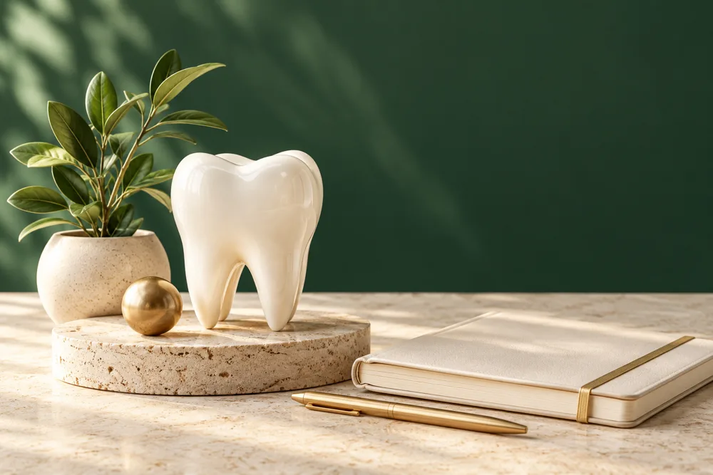

01
Clínica Geral
Avaliação da saúde bucal, prevenção e cuidados do dia a dia, com orientação para a sua rotina.
ODONTOLOGIA HUMANIZADA EM BELÉM
Converse com a recepção, tire suas dúvidas e consulte a disponibilidade para sua avaliação.
SIMPLES PARA COMEÇAR
Deixe seu contato ou abra o WhatsApp para saber como solicitar uma avaliação.
A equipe informa a disponibilidade e confirma o horário com você.
A avaliação individual orienta as indicações, as etapas e o orçamento do cuidado.
Sem precisar escolher um tratamento antes de conversar. A indicação depende da avaliação profissional.
TRATAMENTOS
Da prevenção à reabilitação, conheça os cuidados disponíveis para sua saúde bucal.
Avaliação da saúde bucal, prevenção e cuidados do dia a dia, com orientação para a sua rotina.
Avaliação das possibilidades de cuidado estético facial, considerando suas características e expectativas.
Avaliação e tratamento de canal quando indicado, com esclarecimento das etapas do cuidado.
Avaliação do alinhamento dos dentes e da mordida, com planejamento das possibilidades de tratamento.
Planejamento para reposição de dentes, considerando função, adaptação e as necessidades de cada pessoa.
Avaliação da possibilidade de implantes, com planejamento individual e acompanhamento do tratamento.
A avaliação profissional define a indicação e o plano de cuidado para cada pessoa.
ATENDIMENTO HUMANIZADO
Sua história e suas dúvidas fazem parte do cuidado.
Primeiro, a equipe ouve você. Depois, a avaliação orienta as possibilidades, as etapas e o orçamento — para você decidir com clareza.
Conversa com a equipe → Avaliação → Plano de cuidado

NOSSA EQUIPE
DÚVIDAS FREQUENTES
Se sua dúvida não estiver aqui, a recepção pode orientar você sobre o atendimento.
Não. Você pode agendar uma avaliação e conversar sobre o que sente ou gostaria de cuidar. A indicação do tratamento depende dessa avaliação.
Use um dos botões de WhatsApp desta página. A recepção informa os horários disponíveis e confirma o agendamento com você.
Não. Ele registra seu pedido de contato. Você confirma o envio da mensagem no WhatsApp e a recepção combina a disponibilidade e o agendamento.
O orçamento depende da avaliação e do plano indicado para cada pessoa. Converse com a recepção sobre as condições da avaliação antes de agendar.
O atendimento é mediante agendamento. Consulte a recepção e confirme seu horário antes de se deslocar até a clínica.
Na Travessa Almirante Wandenkolk, 1243, em Belém/PA. Confirme seu horário com a recepção antes de se deslocar.
ODONTO PERSONNALLITE · BELÉM
Travessa Almirante Wandenkolk, 1243
Belém · Pará
FALE COM A NOSSA RECEPÇÃO
(91) 98188-8353Consulte dias, horários e disponibilidade pelo WhatsApp.